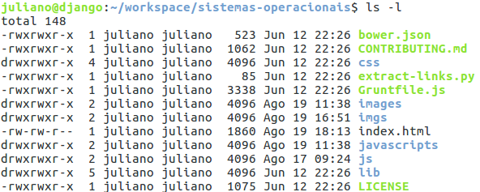
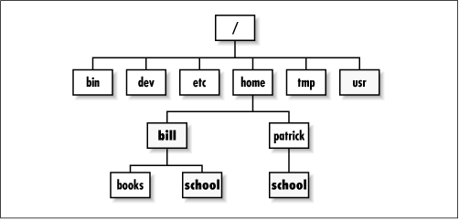
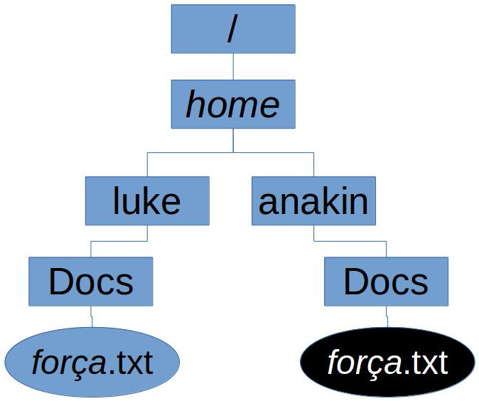

Sistemas Operacionais
Linux: arquivos, organização do sistema de arquivos e manipulação de arquivos
Professor: Juliano Fischer Naves / email
No Linux, tudo é um arquivo
ls -l
| Tipo | Significado | Símbolo |
| Arquivo comum | arquivo comum | - |
| Diretório | diretório | d |
| Links | um modo de fazer um arquivo ou diretório visível em múltiplas partes do sistema | l |
No Linux, tudo é um arquivo
ls -l
| Tipo | Significado | Símbolo |
| sockets | tipo especial para comunicação entre processos na rede | s |
| named pipes | similar aos sockets, para comunicação entre processos | p |
No Linux, tudo é um arquivo
ls -l

Organização da Árvore de Diretórios
- Uma única hierarquia de diretórios
- Windows: uma hierarquia para cada partição
- diretório raíz (root directory): diretório mais alto na árvore de diretórios

Organização da Árvore de Diretórios
- / : diretório raíz, normalmente não possui arquivos regulares (somente diretórios)
- /bin : comandos necessários durante o boot e que podem ser utilizados por usuários normais (após o boot)
- /sbin : similar a /bin, mas não destinado a usuários normais
- /etc : arquivos de configuração
Organização da Árvore de Diretórios
- /root : diretório home para usuário root
- /lib : bibliotecas compartilhadas, necessárias para os programas no sistema
- /lib/modules : módulos do kernel - especialmente aqueles necessários para iniciar o sistema em recuperação de falhas
- /dev : arquivos de dispostivos. Arquivos especiais que ajudam a interface do usuário com os vários dispositivos do sistema
Organização da Árvore de Diretórios
- /tmp : arquivos temporários. Normalmente apagado na inicialização.
- /boot : arquivos usados para a inicialização
- /mnt : ponto de montagem temporários para ser utilizado pelo administrador do sistema
- /var : dados variados, como por exemplo, logs
Organização da Árvore de Diretórios
- /home : raíz dos diretórios home
- Linux é um sistema multiusuário
- Cada usuário tem um diretório atribuído a ele
- Acessíve somente por ele e pelo administrado
- /home/usuário/
Navegando pelos Diretórios
Comando cd : troca o diretório de trabalho
- cd /home: troca o diretório de trabalho para /home
- cd /: troca para o diretório raíz
Alguns "atalhos"
- .. - diretório anterior (acima na árvore)
- . - diretório atual
- ~ - home do usuário
Navegando pelos Diretórios
- cd ~: troca para o diretório home do usuário (/home/usuario/
- cd ..: sobe um nível na árvore de diretórios
- cd .: permanece no mesmo diretório
- cd ../../: sobe 2 níveis na árvore de diretório
Caminho Absoluto
- Caminho para um arquivo a partir da raíz
- É iniciado com uma barra
- Independente do diretório de trabalho
- /home/juliano/Documentos/arquivo.txt
- Só um arquivo em todo o sistema! Não existem caminhos absolutos iguais para 2 arquivos.
Caminho Relativo
- Caminho para um arquivo a partir do diretório de trabalho
- Pode identificar mais de um arquivo

anakin@universe:/home/anakin$ cat Docs/força.txt
luke@universe:/home/luke$ cat Docs/força.txt
Manipulando Arquivos
- mkdir nome_do_dir: cria um diretório
- mv arq local: move arquivos
- cp [-R] fromfile tofile: copia arquivos
- rm arquivo: remove um arquivo
- rmdir diretório: remove um diretório vazio
- Use ls -a para verificar se um diretório está vazio